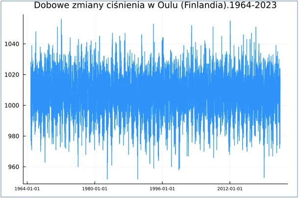
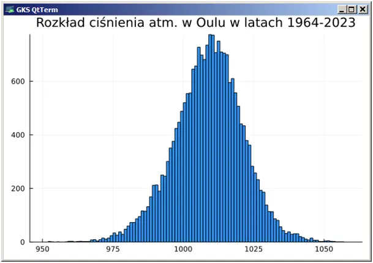
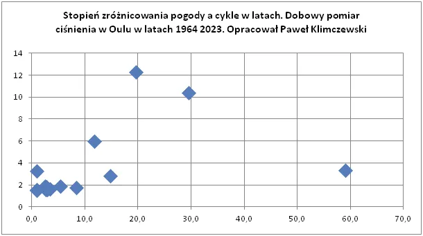

“Kiedyś to Panie były inne zimy i inne lata…” No tak, były.
Przy okazji zbierania danych o natężeniu promieniowania fińscy uczeni od 60 lat co dzień zapisują ciśnienie atmosferyczne. Gratka dla analityka, spojrzałem na ten przebieg i widzimy ludzkim okiem na grafie falowanie i spadanie.
60 lat to pięć jedenastoletnich cykli słonecznych. To, co widać gołym okiem potwierdza też matematyczna analiza serii czasowych. Co 11 lat rosną i spadają w widocznej na wykresie rozdzielczości maksymalne i minimalne długie serie. Widzimy też, że z pewną regularnością pojawiają się zjawiska ekstremalne, wyże ponad 1040 hPa i niże na poziomie 960 hPa.

Skrajne wyże to latem upały, a zimą to tęgie mrozy, skrajne niże to wichury. Aura w Finlandii jest ściśle związana z tym, co dzieje się w Polsce i śmiało możemy wnioski przekładać na nasze doświadczenia.

To było do przewidzenia, ale pokusiłem się o innego rodzaju analizę: zadałem sobie pytanie, czy istnieje jakaś regularność pogody bardziej stabilnej i skrajnie zmiennej. Okiem ludzkim tego nie poznamy, bo wykres ilustruje 21581 dni i grubość niebieskiej linii zlewa istotne szczegóły. Na szczęście mamy komputery. Sprawdziłem wariancję (czyli zmienność ciśnienia) w każdym możliwym horyzoncie czasowym od początku pomiaru (21581 modeli) i szukałem w każdym z możliwych okresów harmonicznych metodą FFT. Okazało się, że istnieją całkiem wyraźne cykle pogody zmiennej i stałej. Ostatni wykres pokazuje, że na skali do 14 (skala ad hock) maksimum z wartością 12 przypada na cykl 20-letni, a kolejne mocne cykle to 30 i jego harmoniczna 60 lat. Z wartością 6 na skali mamy jeszcze okres 11,8 roku, co jest zapewne pochodną cyklu słonecznego.

Ludzka konkluzja jest taka, że te cykle mają długość pokoleniową i każdy z nas jest ofiarą sytuacji, że w jego percepcji utrwala się obraz: "kiedyś to Panie były inne zimy i inne lata.." No tak, były.
Paweł Klimczewski